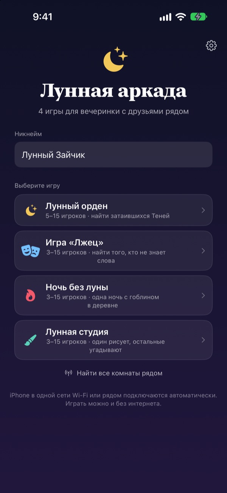
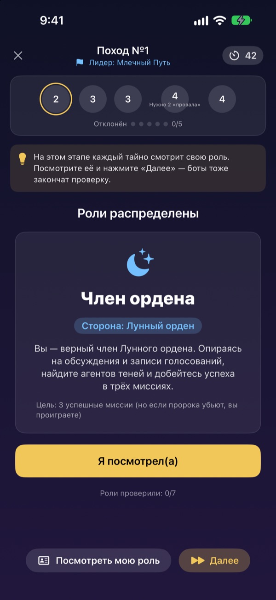
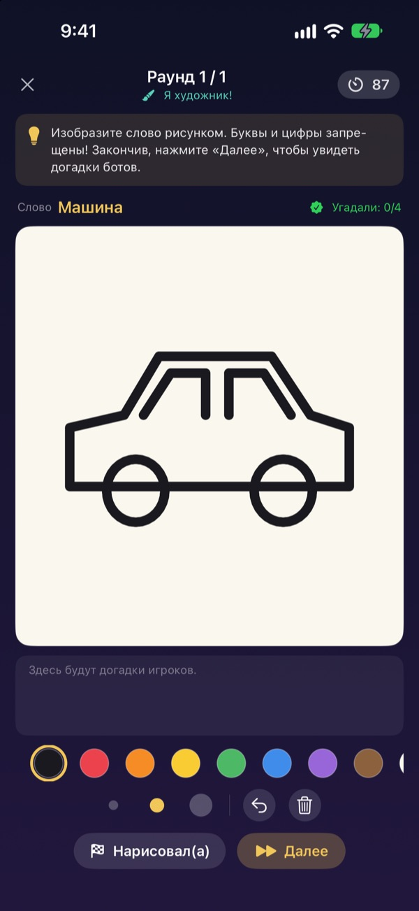
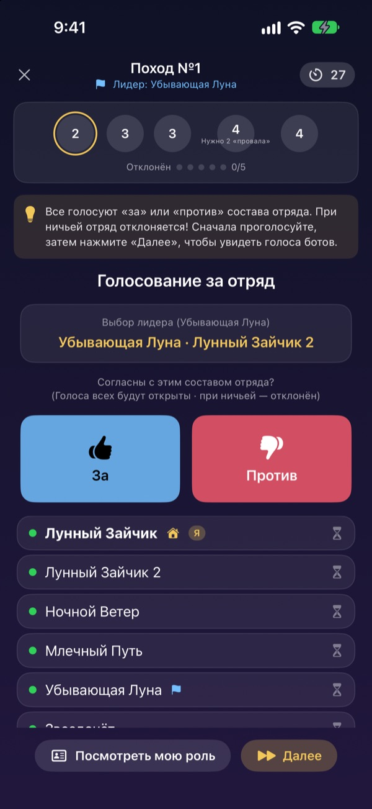

Все в сборе?
Доставайте iPhone.
Один создаёт комнату, и все, кто рядом, заходят за секунды. Роли и секретные слова видны только на своём экране: без карточек и без ведущего, который выпадает из игры.
Все игры бесплатны. Без аккаунта и интернета.

Сыграйте раунд в «Лжеца»
Представьте пять iPhone на столе и нажимайте по одному, чтобы подсмотреть. Слова не знает только один. Можно передавать экран друг другу по кругу.
Компания собралась, а во что играть — непонятно
Вечер настолок, выезд на дачу, Новый год с семьёй. В «Мафии» кому-то приходится выпадать из игры и вести, а сложенные бумажки никогда не бывают по-настоящему тайными. На даче со слабым Wi-Fi и онлайн-игры не запустить. В Лунной аркаде ведение, раздачу ролей и связь берут на себя сами iPhone.
Ваша роль — только на вашем экране
В начале игры каждый iPhone получает свою роль или слово. Не нужно раздавать карточки и командовать «город засыпает».
При голосовании видно лишь, кто уже проголосовал. Кто за кого голосовал, остаётся тайной до раскрытия.

Четыре игры на любую компанию
В «Лжеце» побеждает красноречие, в «Лунном ордене» вы ищете Теней через миссии и голосования, в «Ночи без луны» за одну ночь вычисляете Гоблина, а в «Лунной студии» один рисует, остальные угадывают.
«Лунный орден» — от 5 игроков, остальные — от 3, все до 15.

Новая игра? Освоите за пару минут
В каждой игре есть режим «Как играть»: вы проходите раунд с ботами шаг за шагом. Читайте подсказку сверху и нажимайте «Далее».
Если приложение закрылось или связь пропала, нажмите «Продолжить» на главном экране и вернитесь в тот же раунд.

Три шага, чтобы начать
- 1
Никнейм и игра
Все открывают приложение, вводят никнейм и выбирают игру.
- 2
Создать комнату или войти
Один создаёт комнату, остальные находят её через «Найти комнаты рядом».
- 3
Хост начинает
Когда все на месте, хост нажимает «Начать игру». Остальное приложение сделает само.
Четыре игры
- Игра «Лжец» · 3–15 игроков
- Все получают одно и то же слово, кроме одного. По очереди его описывают, потом голосуют за Лжеца. Если пойманный Лжец угадает слово, он всё равно побеждает.
- Лунный орден · 5–15 игроков
- Найдите Теней, затаившихся в Ордене. Лидер собирает команду, все голосуют «за» или «против», а команда тайно выбирает успех или провал. Побеждает та сторона, что первой возьмёт три миссии.
- Ночь без луны · 3–15 игроков
- Одна ночь, и в деревне прячется Гоблин. Ночью Шаман, Ночной вор и Шутник тайно действуют. На рассвете обсуждение и всего одно голосование, чтобы найти Гоблина.
- Лунная студия · 3–15 игроков
- Один рисует слово, остальные угадывают в чате. Чем быстрее угадали, тем больше очков, а художник получает очки за каждый верный ответ.
Любую игру можно сначала опробовать в одиночку с ботами в режиме «Как играть».
Частые вопросы
Не вижу комнату.
Проверьте, что хост и игроки в одной сети Wi-Fi или рядом друг с другом. Чтобы находить устройства рядом, Лунная аркада должна быть включена в «Настройки» ▸ «Конфиденциальность и безопасность» ▸ «Локальная сеть». Если включены и Wi-Fi, и Bluetooth, связь самая стабильная.
Обязательно разрешать доступ к локальной сети?
Да, так приложение находит iPhone поблизости и подключается к ним. Если вы нажали «Не разрешать», включите доступ в «Настройки» ▸ «Конфиденциальность и безопасность» ▸ «Локальная сеть».
Связь оборвалась посреди игры.
Снова откройте приложение и нажмите «Продолжить» на главном экране — вы вернётесь в ту же комнату и тот же раунд. Роль и очки сохраняются. Если долго не получается, войдите заново из списка комнат.
Кто-то не отвечает, и игра застряла.
Хост в любой момент может удалить неактивного игрока: игра пересчитает итоги по оставшимся и продолжится. В режиме ведущего (GM) можно и пропустить застрявший этап.
Сколько нужно игроков?
Для «Лунного ордена» — 5. «Лжец», «Ночь без луны» и «Лунная студия» начинаются с 3. Во всех играх до 15 человек. Не хватает людей? Освойте правила с ботами в режиме «Как играть».
Нужны интернет или аккаунт?
Нет. Ни регистрации, ни входа, ни интернета. iPhone рядом соединяются напрямую, а игровые данные никогда не отправляются на сервер.
Можно сначала попробовать одному?
Да. Выберите игру, затем «Как играть (тренировка с ботами)». Боты зайдут в комнату, и вы сыграете целый раунд шаг за шагом.
Как сообщить об ошибке или предложить идею?
Прямо в приложении: «Настройки» (шестерёнка) ▸ «Поддержка», или письмом на адрес ниже. Ответим как можно скорее.
Ошибки, идеи и другие вопросы — пишите на mizzking75@gmail.com.